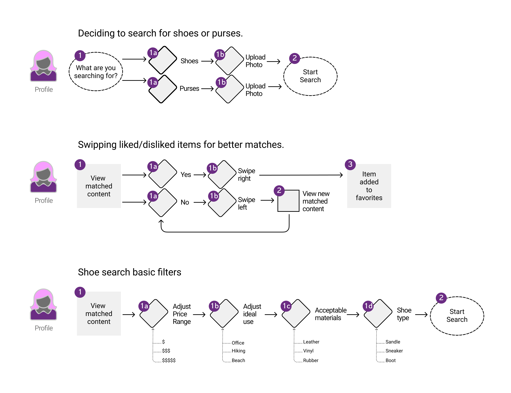
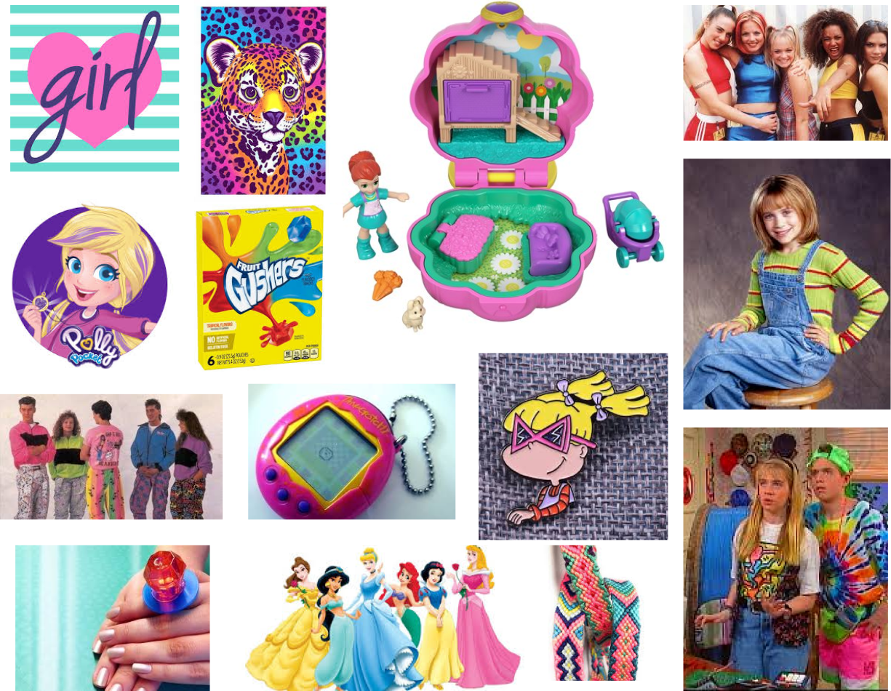
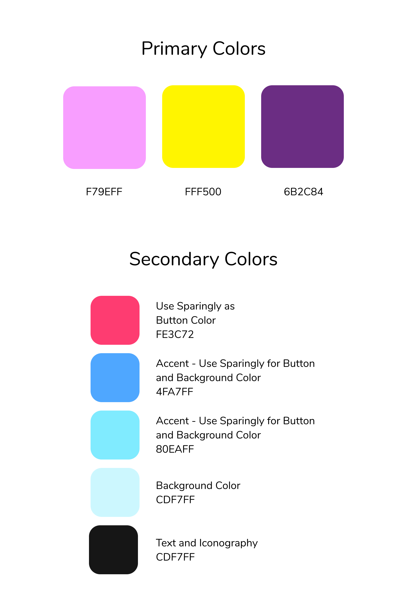
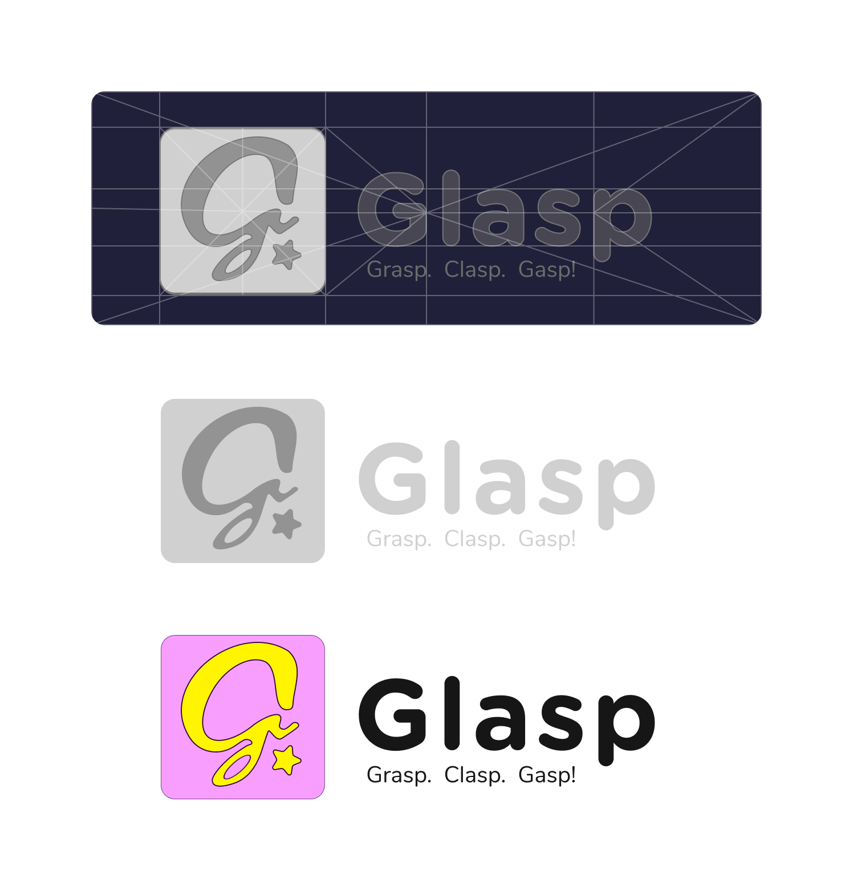
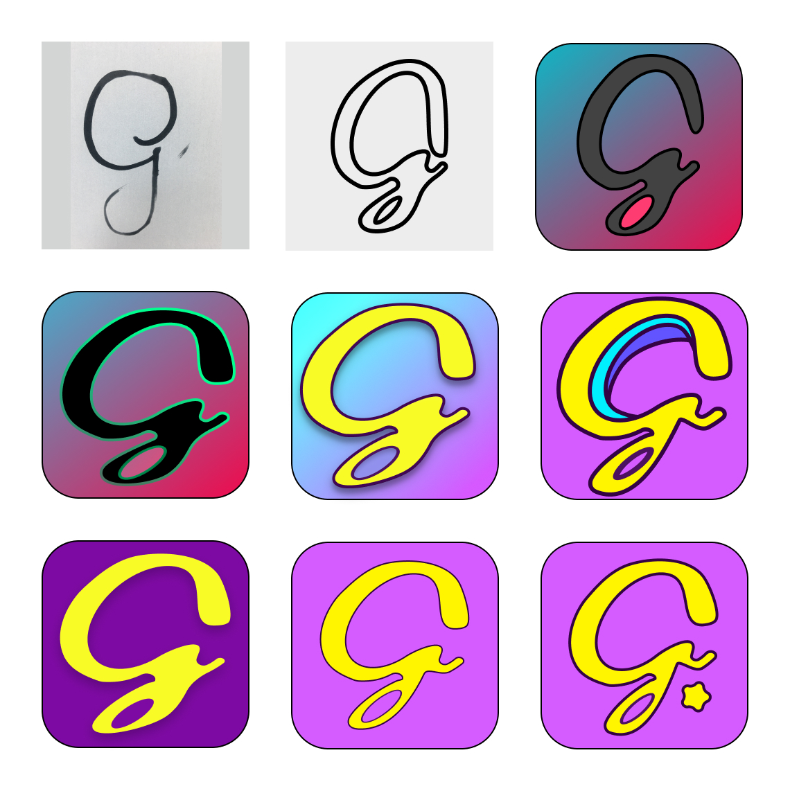

Shoe and Handbag Matcher

Glasp
With so many clothing accessory options out there, Glasp helps find you the perfect match for your shoes and handbags. Using smart algorithms that understand your daily needs and preferred fashion style, Glasp helps bring a fun, easy, and socially connected spin on helping you look and feel great!
Style is something extremely unique to an individual. We each have our own preferences and needs associated with the clothing we wear. When this translates to fashion, the time and energy it takes to find the perfect match can be daunting. I am sure many of you have those perfect shoes you have found just sitting in your closet. You absolutely love them! However, they continue to sit in your closet because you haven't found that perfect outfit to go with them….yet!
With intuitive design at the forefront, the Glasp app is easy to navigate for both teenagers and adults alike. Taking advantage of the recent leaps forward in photo recognition software technology, you simply take a photo or upload an image from your camera roll of the shoes or handbags you want to match with. Coloration, pattern, style, function, and form will quickly be analyzed automatically by glasp. The user will be given a set of matches that they can like or dislike. With smart analytics, Glasp recognizes patterns in what the user perceives as desirable and is able to deliver matches that will be sure to make them grasp for the item, eagerly clasp on the accessorie, and gasp at the amazing deal they found that has them looking so great!
Roles
- UX Design
- Visual Design
- Brand and Identity
Duration
- 6 weeks
Tools
- Figma
- Google Survey
- Pen and paper
Deliverables
- User Surveys
- User Stories
- User Flows
- Sketches
- Wireframes
- Prototype
- Branding
- Moodboard
- Refinement
- Color Palettes
- Hi-Fi Mockups
- Clickable Prototype
- Final Design
User Surveys
A survey was put together and what I found was that the vast majoritiy of people used cloud storage but no one consistantly saved voice data to their cloud drives. Many participants felt frustratation and regret over not remembering what they had talked about earlier in the day or week and were excitiedto utalize a tool that would aid with this problem. Below are some quick statistics:
40% of participants shop for purses and shoes exclusively online.
53% of those polled actively spend about 2 hours a month looking for accessories.
47% would not buy or wear second hand clothing.
User Stories
Take a photo of my shoes or purse, so I can compare them to other potential matches.
Easily swipe away matches im interested/not interested in so I can keep the flow going for potential matches.
Size/Price filtering options, so I dont come across matches that will not fit me.
Get targeted matches based on inputted hobbies and profession listed in profile bio.
User Flows
Simplicity is what the user demands. An intuitive Dashboard where the most pertinent user information would be found. History where the user to view all the content. Search and Related content so the user sees they are not alone. And most importantly a mood graph for easy self realization in emotional habit forming.
The main goal is accessability for all, thus the user flows are simple and intuitive. The app is designed to do one thing really well. I want this software to transcende age, culture, and socio-economic status. The simpler, the better.
Sketches

Moodboard
Branding is my favorite part of the UX process, so naturally I spent a lot of attention really getting the small details right. When I came up with the app idea, I instantly knew how I wanted the logo and feel of the app to appear, but I did a quick mind mapping exercise to see if there was anything hidden within that would come to the surface after seeing some ideas on paper.
I knew I wanted something that 30-something-year-olds could connect with and that also felt at home to a child. Classic Nickelodeon type feel dominated my moodboard.
Branding
I have fond memories of old skool Nickelodeon cartons and toy commercials from the earl/mid 1990's. I've seen some resurgence of retro clothing and shows on TV making this stylistic comeback, but I havent seen it incoperated into an app design. So, why not?
Colors
Logo Design
The logo is a throwback to the bubbly 1990's fonts. Part Polly Pocket, part Ring-Pop, with a dash of Limited-Too.
Logo Evolution
Wireframes
Prototype
Final Design
What I learned
Glasp is a project that I really had no background on. I’d often overhear people excitedly commenting on “Oh! Where did you find that outfit??!!” and the other person eagerly exclaiming how it was a lucky find. I enjoy creating happiness and I believe technologically we are at the point where such an app as Glasp can exist. An app that is fun to use, has high value for its users, and levels up their wardrobe.
In considering further development of the current minimal viable product, I would like to expand on user development and to do more research in photo recognition technologies and automated search power. What features can I add to make the app more fashion minded? From a business standpoint, I would like to see how this product can work with vendors and create revenue for suppliers. From a marketing perspective, How can Glasp revolutionize the way we dress? How can it augment perceptions on style and expression? I would like to see how this app can be synchronized with the personal used clothing market. How cool would it be to have a network of nearby unworn and wanted clothing? One never needs to go far from home to strike gold. I firmly believe this app will help.